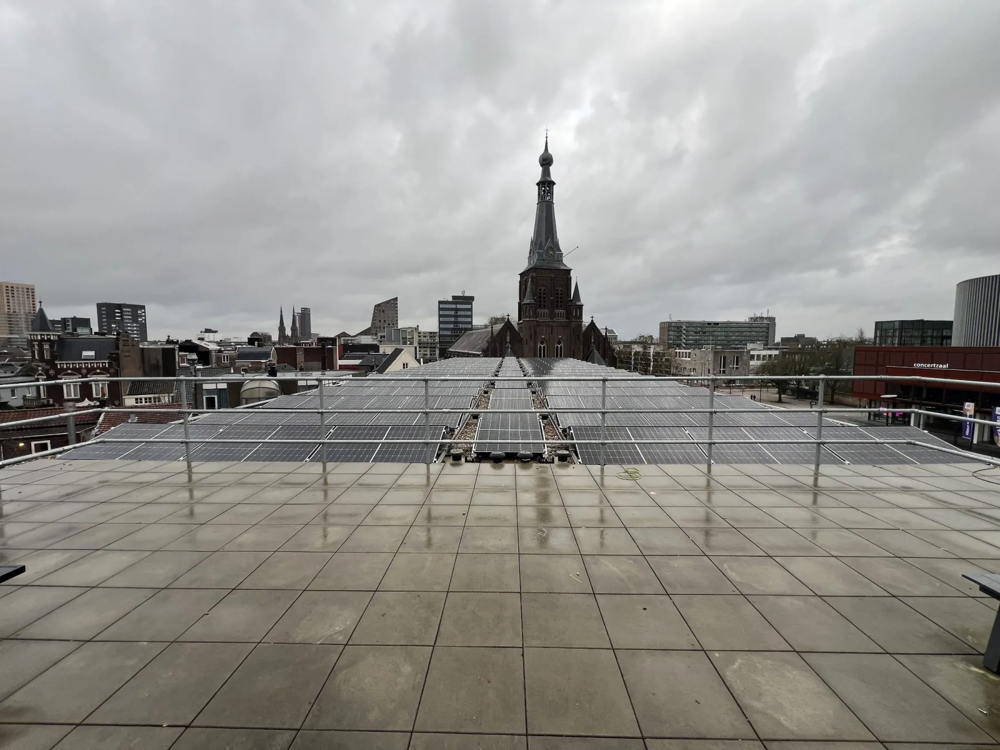
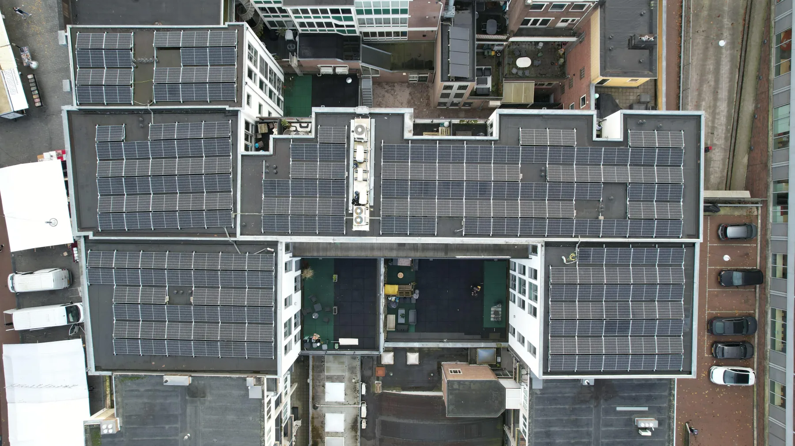
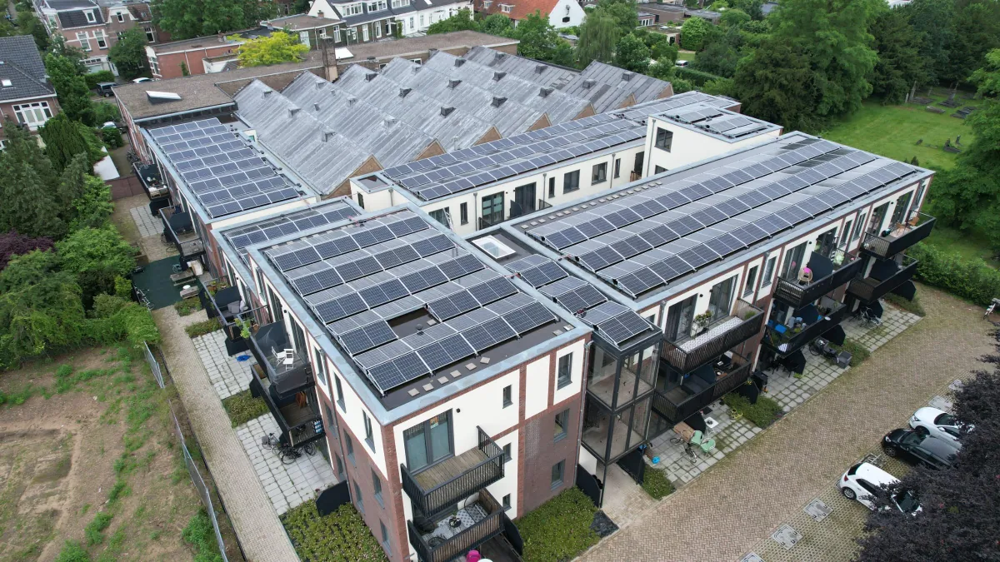
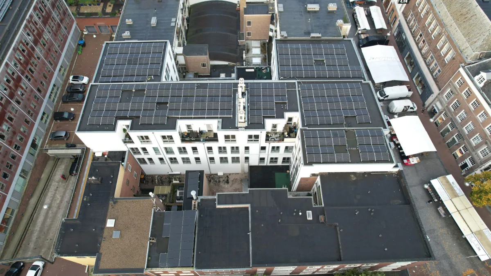
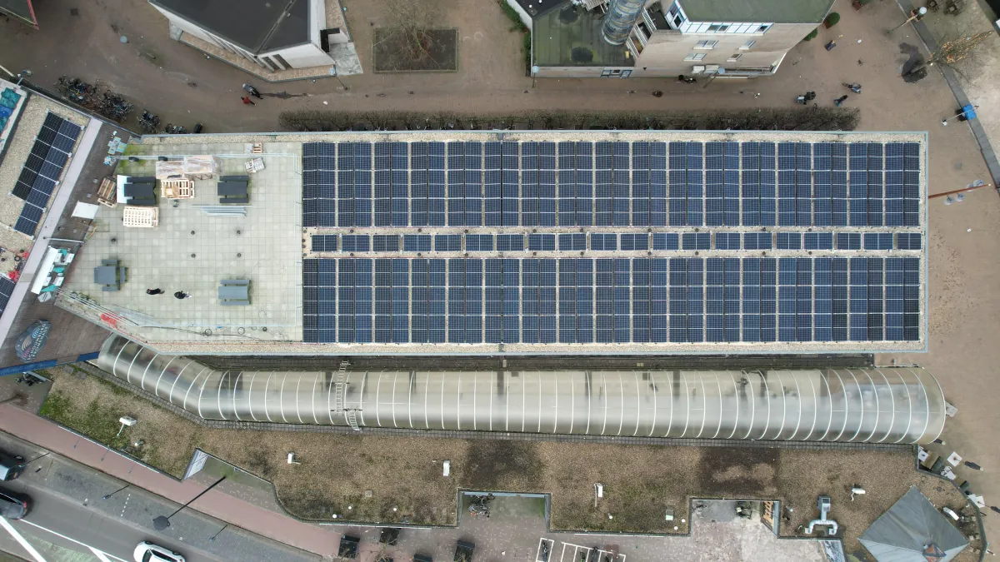

Eén voorziening voor het hele complex. Niet voor elk appartement apart.
In een wooncomplex komt bijna alles samen: één dak, één meterkast, één parkeerterrein. Wie dat als geheel aanpakt, krijgt meer voor elkaar dan wanneer iedere bewoner het op zijn eigen balkon of eigen parkeerplaats probeert te regelen.
Waar het in een complex meestal op vastloopt.
Elk gebouw is anders, maar dit komt in bijna elke vereniging terug.
De vraag naar laadplekken groeit sneller dan de meterkast
De eerste bewoner vraagt om een laadpunt, de volgende ook. Op een gegeven moment kan de aansluiting het niet meer hebben en moet het bestuur nee verkopen. Dan gaat het niet meer over techniek, maar over wie er wel en niet mag laden.
De gezamenlijke rekening loopt op
Verlichting in de hal, de lift, de ventilatie, de pompen: dat verbruik loopt dag en nacht door en komt bij iedereen op de servicekosten terecht. Niemand ziet het, maar iedereen betaalt mee.
Het complex wordt per woning bekeken
Panelen boven het ene appartement, een laadpunt bij de ene parkeerplaats. Los van elkaar levert dat minder op — en kost het meer — dan één plan voor het hele dak en de hele aansluiting.

Wat u er samen voor terugkrijgt.
Eén aanpak voor het hele gebouw, in plaats van losse oplossingen per woning.
Een dak dat meebetaalt
Het dak van een complex is groot genoeg voor een installatie die het hele gebouw bedient. De opbrengst komt bij de vereniging terecht en drukt op de gezamenlijke kosten, in plaats van bij één bewoner die toevallig de bovenste verdieping heeft.
Laadplekken zonder wachtlijst
Laadpunten die samen worden aangelegd, kunnen ook samen worden aangestuurd. Het beschikbare vermogen wordt dan over de auto's verdeeld, zodat er plek is voor meer bewoners dan de aansluiting los van elkaar zou toelaten.
Ruimte voor wat er nog aankomt
Een complex verandert stap voor stap: eerst laadplekken, later misschien warmtepompen. Door opslag en sturing meteen mee te nemen, hoeft die volgende stap niet opnieuw op de aansluiting te stuiten.
Eén dak. Eén meterkast. Eén besluit.
Zodra het over energie gaat, is een complex geen stapel losse woningen meer. Het dak, de aansluiting en het parkeerterrein zijn van de vereniging — en dus is het ook de vereniging die er in één keer iets mee kan doen.

Hoe groter het dak, hoe meer er in één keer op past — en hoe meer bewoners er iets aan hebben.
Ieder voor zich, of één keer voor iedereen.
Hetzelfde gebouw, dezelfde bewoners, dezelfde aansluiting. Het verschil zit in wie het regelt — en of het één keer gebeurt of telkens opnieuw per woning.
Iedere bewoner apart
- Panelen boven het ene appartement, een laadpunt bij de ene parkeerplaats.
- Elke aanvraag komt los langs de meterkast en los langs het bestuur.
- Wie het eerst vraagt, krijgt een laadplek; daarna is de aansluiting vol.
- Hal, lift en pompen blijven op de gezamenlijke rekening staan.
Eén voorziening voor het complex
- Eén plan voor het hele dak, de meterkast en het parkeerterrein.
- Het bestuur legt het in één keer voor aan de vergadering.
- Het beschikbare vermogen wordt over de laadplekken verdeeld.
- De opbrengst van het dak komt bij de vereniging terecht.
Van eerste gesprek tot oplevering.
Het bestuur hoeft geen techniek te kennen. Wel te weten wat er wanneer gebeurt, en wie waarover beslist.
Kennismaking
We lopen met het bestuur door wat er nu op het complex staat, wat bewoners vragen en waar het knelt. Daar is verder niets voor nodig dan een afspraak.
Voorstel voor het complex
Wij bekijken het dak, de meterkast en het parkeerterrein en maken daar één plan van: wat er kan, in welke volgorde, en hoe het betaald wordt.
Besluit in de ALV
Het bestuur legt het voorstel voor aan de vergadering. Vibe levert de onderbouwing waarmee dat besluit te nemen is: wat er komt, hoe het werkt en wat het voor de vereniging betekent.
Aanleg en oplevering
Na akkoord plannen we de werkzaamheden en houden we bewoners op de hoogte van wat er gebeurt. Na oplevering blijft Vibe betrokken voor het beheer en de aansturing.
Alles komt uit op dezelfde aansluiting.
Het dak, de meterkast en het parkeerterrein hangen aan dezelfde kabel. Alles wat er in een complex bij komt — laadplekken nu, misschien warmtepompen later — vraagt ruimte op die ene aansluiting. Daarom kijken wij er in één keer naar, en niet per onderdeel.

Wooncomplexen waar dit al staat.
Bestaande gebouwen waar het dak in één keer voor alle woningen is ingericht.

Van Beethovenstraat
62 woningen en 302 zonnepanelen. Het energielabel ging vier stappen omhoog, in twee weken en zonder ingrijpende aanpassingen aan de woningen.
Bekijk het project →
Burchtstraat
52 woningen en 254 zonnepanelen op de daken van een binnenstedelijk blok. Het energielabel ging vier stappen omhoog, in twee weken.
Bekijk het project →
Schouwburgring
160 woningen en 534 zonnepanelen, als één complex aangepakt in het centrum van Tilburg.
Bekijk het project →Vragen die een bestuur meestal stelt.
Moet iedere bewoner hieraan meedoen?
Het gaat om een voorziening van de vereniging, dus de vergadering beslist erover — niet iedere bewoner apart. Wat er in uw complex precies voor nodig is, hangt af van de splitsingsakte en het huishoudelijk reglement. Dat lopen we samen met het bestuur na voordat er iets wordt voorgelegd.
Moet de vereniging hier zelf geld voor opzijzetten?
Niet per se. Naast gewoon kopen is exploitatie mogelijk: Vibe investeert, bouwt en beheert de installatie, en de vereniging betaalt voor het gebruik ervan. Of dat in uw situatie uitkomt, beoordelen we per geval — en als het antwoord nee is, zeggen we dat.
Wat als niet iedereen elektrisch rijdt?
Dat hoeft ook niet. De laadplekken worden aangelegd op wat er nu nodig is, maar wel zo dat er later bij kan zonder dat de aansluiting opnieuw het probleem wordt. Bewoners die geen laadpunt gebruiken, profiteren intussen van de opwek op het dak.
Hoe leggen wij dit uit in de vergadering?
Vibe levert de onderbouwing waarmee het bestuur het besluit aan de ALV kan voorleggen: wat er komt, hoe het werkt en wat het voor de vereniging betekent. In gewone taal, zodat het ook te volgen is voor bewoners zonder technische achtergrond.
Kan dit ook als er al zonnepanelen liggen?
Meestal wel. Wat er ligt, blijft liggen. We kijken of het onder dezelfde aansturing kan worden gebracht en wat er op het resterende dak nog bij kan.
Benieuwd wat er op uw complex kan?
Een gesprek met het bestuur is genoeg om te beginnen. Daarna weet u of het de moeite waard is om het aan de vergadering voor te leggen.
Reactie binnen één werkdag. Vrijblijvend.